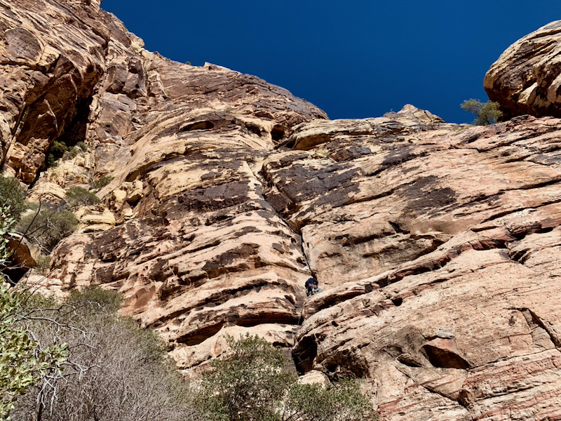
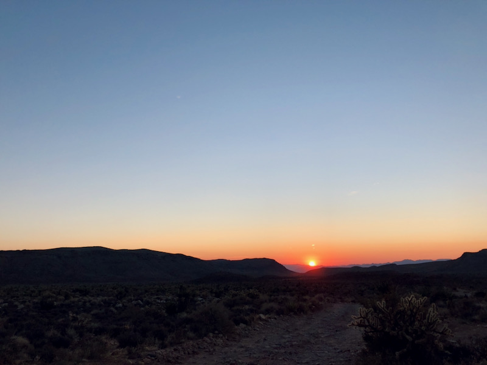
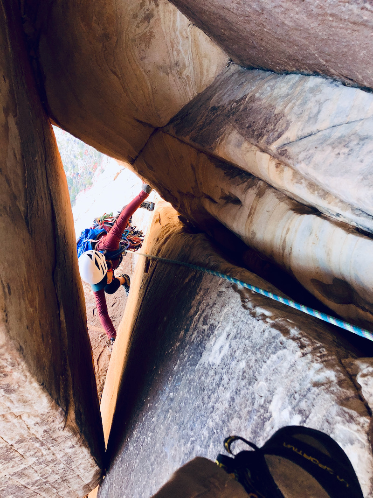

View of the canyon
View of the canyon
TL;DR: Stop reading this page if you (or anyone related to you) intend on suing me if you die, get hurt, and/or horribly lost on a 20 hr day epic.
Longer disclaimer: Climbing is dangerous. Do your own independent research before attempting any route. Notes here are for my own use and not intended to be definitive or "safe" beta of any sort.
Some additional things about this page:
Commentary: Cat in the hat is a chill, but interesting enough multipitch. Great route to familiarize yourself with Red Rock trad multis.
Commentary: If you're a somewhat competent climber (e.g. solid Joshua Tree 5.7 climber), you won't use half of this gear per pitch, but never hurts to have extras?
Being drawn...
Mescalito after walking roughly 10 minutes from the Pine Creek Canyon parking lot. The approach trail map can be found on Mountain Project.
Mescalito in all of it's glory.
 Unknown climber (me) on pitch 1.
View of the canyon
 View from near pitch 4.
View from near pitch 4.
You do Frogland for the chockstone squeeze pitch. Just do it. You know you want to. Make some grunting noises, release your anger.
Being drawn...
 Watching the sun rise behind us on the approach
 My leader starting pitch one. Pro? We don't need pro where we're going.
My leader starting pitch one. Pro? We don't need pro where we're going.
 Follower about to enter the chockstone birthing canal.
 Found a friend on the walk-off.
Found a friend on the walk-off.
This is probably one of the easiest approach "alpine" climbs you can do, Roughly 45 minutes from the parking lot to the base. I didn't actually finish all of the "summits" of Crystal Crag as I saw a dark cloud in the distance. That "cloud" turned out to be one of the Sierra fires in the summer of 2020.
Does this count as an alpine start if you can see?
View of Lake George.
Time to do some boulder hopping to get to the base of the climb
Start of the famous crystal pitch
First summit, including the rock everyone stands on for the gram.
On my way to clear all the summits.
Oh look ... another one. It just never ends. Just before I bailed off
The only proper way to finish a day